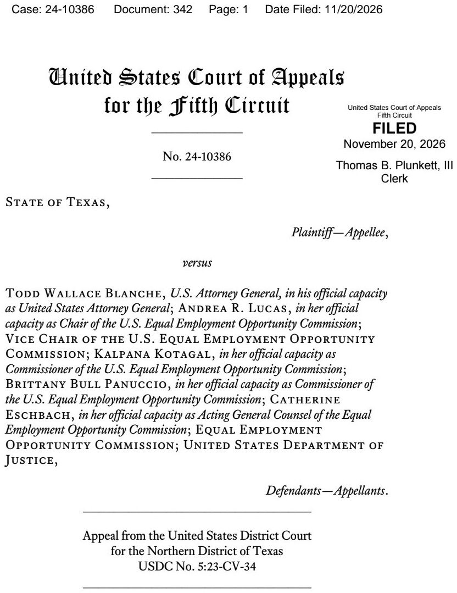
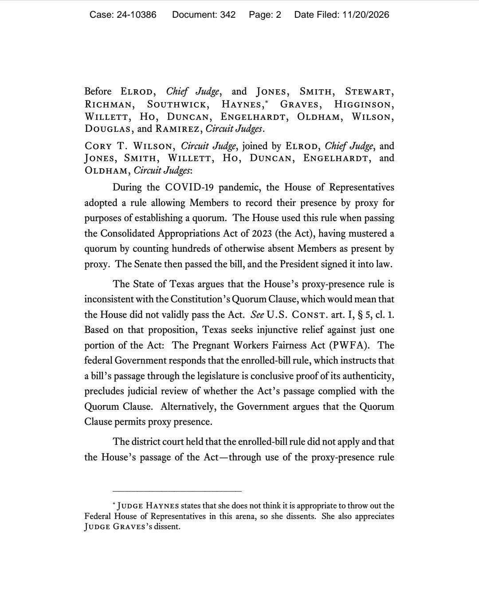

Wall Street has been peddling abusive tax schemes to the wealthy. The IRS will come down hard on both the firms promoting them and the investors using them.
Firms should win business by delivering better returns, not by dreaming up ever more outrageous tax gimmicks and exposing their clients to the consequences. Hardworking Americans put in an honest day’s work and pay what they owe. We want capital growing businesses and creating jobs, not funding the next tax dodge.
Today, November 20, 2026, President Donald J. Trump signed into law:
H.R. 10167, the “Common Cents Act,” which directs the Department of the Treasury to stop production of the penny except for collector needs; provides rounding guidance for cash transactions; allows the nickel to be composed of cost-saving materials; and provides procedures for the Secretary of the Treasury to follow to discontinue the production of any coin for general circulation;
H.R. 5284, the “Claiming Age Clarity Act,” which changes certain terminology used by the Social Security Administration;
H.R. 8352, the “Criminal History Access Act of 2026,” which authorizes the Department of Justice to exchange criminal identification records with peace officer standards and training agencies of a State, the District of Columbia, or a United States territory; and
H.R. 10159, which authorizes the Secretary of the Army to convey to the State of North Carolina a certain parcel of real property located at Fort Bragg, North Carolina, on which the State shall construct a veterans’ State home, and for other purposes.
At the @CFTC we are making room for new technologies and products, but we’re not tilting the scales in anyone’s favor.
Whether you’re an established exchange or a new blockchain-based platform, the rules are the rules, regardless of who’s playing. Watch @thehill:
Opinion: The influence of AI in digital assets such as tokens can create a structure where corporate value may no longer be only in equity and where tax treatment can be far less settled.
NEW: In a 9-8 vote, the en banc Fifth Circuit held that the House of Representatives violated the Constitution by counting absent members toward a quorum through proxy voting when passing a major 2023 spending law.


The FBI was hit by a cyberattack targeting the National Crime Information Center (NCIC), a nationwide database used by law enforcement agencies to share information on arrest warrants, background checks and other criminal justice records.
JUST IN: Elon Musk reveals Tesla's Optimus robots will initially be deployed in heavy industry, including mining & refining, working 24 hour days, 7 days a week.
JUST IN - The FBI has been hacked again, this time in an apparent breach of its nationwide criminal information database.
BREAKING: Nearly 50% of Buffalo, NY water service lines contain lead